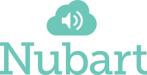

AUFTRAGSVERARBEITUNGSVERTRAG (AVV) FÜR „NUBART LIVE“
Inkrafttreten: 4. November 2026
Version: 1.0
Dieser Auftragsverarbeitungsvertrag („AVV“) ist Bestandteil der Allgemeinen Geschäftsbedingungen für Nubart LIVE und des vom Kunden angenommenen Angebots (zusammen der „Vertrag“) zwischen:
- dem Kunden (als „Verantwortlicher“) und
- dem Dienstleister (als „Auftragsverarbeiter“):
- Nubart GmbH (Berlin, Deutschland), für Kunden in allen Gebieten außer Spanien, Italien, Portugal, Andorra, Brasilien und Lateinamerika; ODER
- Digital Tangible SL (Barcelona, Spanien), für Kunden in Spanien, Italien, Portugal, Andorra, Brasilien und Lateinamerika.
(zusammen die „Parteien“)
1. BEGRIFFSBESTIMMUNGEN
1.1. „Datenschutzgesetze“ bezeichnet alle anwendbaren Gesetze und Vorschriften zum Schutz personenbezogener Daten, einschließlich der Datenschutz-Grundverordnung (EU) 2016/679 („DSGVO“), der UK GDPR und aller anwendbaren nationalen Umsetzungsgesetze.
1.2. „Personenbezogene Daten“, „Verantwortlicher“, „Auftragsverarbeiter“, „betroffene Person“, „Verarbeitung“ und „Verletzung des Schutzes personenbezogener Daten“ haben die Bedeutungen, die ihnen in der DSGVO gegeben werden.
1.3. „Unterauftragsverarbeiter“ bezeichnet jeden Dritten, den Nubart beauftragt, um bei der Erbringung des Dienstes personenbezogene Daten im Auftrag des Kunden zu verarbeiten.
1.4. Begriffe wie „Guide“, „Teilnehmer“, „Gruppe“, „Karte“, „KI-Übersetzungs-Add-on“, „Media Library“ und „KI-Vorbereitung“ haben die Bedeutung, die ihnen in den Allgemeinen Geschäftsbedingungen für Nubart LIVE („AGB“) gegeben wird.
2. GELTUNGSBEREICH UND PFLICHTEN
2.1. Rolle der Parteien: Für die Zwecke der Datenschutzgesetze ist der Kunde der Verantwortliche und Nubart der Auftragsverarbeiter.
2.2. Geltungsbereich: Dieser AVV gilt für die Verarbeitung personenbezogener Daten durch Nubart im Auftrag des Kunden im Rahmen der Bereitstellung des Dienstes Nubart LIVE, einschließlich der optionalen Funktionen KI-Übersetzungs-Add-on und Media Library („Dienst“). Für das kostenlose Testkit gilt dieser AVV entsprechend, soweit der Testnutzer personenbezogene Daten verarbeiten lässt.
2.3. Pflichten des Auftragsverarbeiters: Nubart wird:
- personenbezogene Daten nur auf dokumentierte Weisungen des Kunden (einschließlich derjenigen im Vertrag) verarbeiten, es sei denn, dies ist nach geltendem Recht erforderlich; in diesem Fall teilt Nubart dem Kunden diese rechtlichen Anforderungen vor der Verarbeitung mit, sofern das Recht dies nicht verbietet;
- den Kunden unverzüglich informieren, wenn eine Weisung nach Auffassung von Nubart gegen Datenschutzgesetze verstößt;
- sicherstellen, dass sich die zur Verarbeitung befugten Personen zur Vertraulichkeit verpflichtet haben oder einer angemessenen gesetzlichen Verschwiegenheitspflicht unterliegen;
- alle gemäß Artikel 32 DSGVO erforderlichen Maßnahmen ergreifen (Sicherheit der Verarbeitung, siehe Anhang II);
- den Kunden unter Berücksichtigung der Art der Verarbeitung und der Nubart zur Verfügung stehenden Informationen bei der Einhaltung der Pflichten gemäß den Artikeln 32 bis 36 DSGVO unterstützen (Sicherheit, Meldung von Verletzungen, Datenschutz-Folgenabschätzung, vorherige Konsultation);
- dem Kunden alle Informationen zur Verfügung stellen, die zum Nachweis der Einhaltung dieses AVV erforderlich sind, und Überprüfungen ermöglichen (Abschnitt 7).
3. UNTERAUFTRAGSVERARBEITUNG
3.1. Genehmigung: Der Kunde erteilt Nubart eine allgemeine Genehmigung zur Beauftragung von Unterauftragsverarbeitern zur Erbringung des Dienstes.
3.2. Aktuelle Unterauftragsverarbeiter: Der Kunde stimmt der Beauftragung der in Anhang III aufgeführten Unterauftragsverarbeiter zu. Unterauftragsverarbeiter, die nur für das KI-Übersetzungs-Add-on oder die KI-Vorbereitung eingesetzt werden, verarbeiten Daten nur, wenn der Kunde diese Funktionen nutzt.
3.3. Änderungen: Nubart informiert den Kunden über beabsichtigte Änderungen hinsichtlich der Hinzufügung oder des Ersatzes von Unterauftragsverarbeitern. Der Kunde kann solchen Änderungen innerhalb von 14 Tagen aus berechtigten datenschutzrechtlichen Gründen widersprechen. Können die Parteien den Widerspruch nicht lösen, kann der Kunde den Vertrag in Bezug auf die betroffene Funktion bzw. den betroffenen Dienst beenden.
3.4. Verantwortlichkeit für Unterauftragsverarbeiter: Nubart stellt sicher, dass jeder Unterauftragsverarbeiter durch schriftliche Bedingungen gebunden ist, die mindestens das durch diesen AVV geforderte Datenschutzniveau gewährleisten. Nubart bleibt gegenüber dem Kunden für die Erfüllung der Pflichten seiner Unterauftragsverarbeiter verantwortlich, haftet jedoch nicht für Ereignisse oder Ausfälle außerhalb seiner angemessenen Kontrolle.
4. INTERNATIONALE DATENÜBERMITTLUNGEN
4.1. Verarbeitungsorte: Die primäre Verarbeitungsinfrastruktur von Nubart befindet sich in Irland (EU). Zusätzliche Verarbeitung erfolgt durch Unterauftragsverarbeiter, wie in Anhang III beschrieben. Einige Unterauftragsverarbeiter befinden sich außerhalb des Europäischen Wirtschaftsraums (EWR), einschließlich der USA, oder betreiben weltweit verteilte Server.
4.2. Übermittlungen: Soweit Nubart personenbezogene Daten an einen Unterauftragsverarbeiter in einem Drittland ohne Angemessenheitsbeschluss der Europäischen Kommission übermittelt, stellt Nubart sicher, dass die Übermittlung angemessenen Garantien gemäß Kapitel V DSGVO unterliegt, insbesondere:
- den von der Europäischen Kommission genehmigten Standardvertragsklauseln (SCCs); oder
- einer Zertifizierung des Empfängers nach dem EU-US Data Privacy Framework, auf dessen Grundlage der Angemessenheitsbeschluss der Europäischen Kommission vom 10. Juli 2023 gilt; oder
- anderen angemessenen Garantien, etwa genehmigten verbindlichen internen Datenschutzvorschriften.
5. RECHTE DER BETROFFENEN PERSONEN
5.1. Nubart unterstützt den Kunden, soweit rechtlich zulässig und unter Berücksichtigung der Art der Verarbeitung, durch geeignete technische und organisatorische Maßnahmen bei der Erfüllung seiner Pflicht, Anträge betroffener Personen zu beantworten (z. B. Auskunft, Berichtigung, Löschung).
5.2. Handhabung von Anträgen. Betroffene Personen (z. B. Guides oder Administratoren des Kunden) üben ihre Rechte in erster Linie gegenüber dem Kunden als Verantwortlichem aus. Erhält Nubart einen solchen Antrag direkt, leitet Nubart ihn an den Kunden weiter, ohne ihn selbst zu beantworten, sofern der Kunde nichts anderes anweist. Auf dokumentierte Weisung des Kunden (z. B. per E-Mail) unterstützt Nubart den Kunden, soweit technisch möglich, indem personenbezogene Daten abgefragt, bereitgestellt oder gelöscht werden, und bestätigt den Abschluss der Löschung innerhalb einer angemessenen Frist. Teilnehmer nutzen den Dienst anonym, sodass Nubart einzelne Teilnehmer in der Regel nicht identifizieren kann. In diesen Fällen beschränkt sich die Unterstützung von Nubart auf die Löschung der Daten einer bestimmten Tour, Gruppe oder schriftlichen Frage nach Weisung des Kunden.
6. VERLETZUNG DES SCHUTZES PERSONENBEZOGENER DATEN
6.1. Nubart benachrichtigt den Kunden unverzüglich und in jedem Fall innerhalb von 72 Stunden, nachdem Nubart Kenntnis von einer Verletzung des Schutzes personenbezogener Daten erlangt hat, die personenbezogene Daten des Kunden betrifft.
6.2. Die Benachrichtigung beschreibt, soweit bekannt, die Art der Verletzung, die betroffenen Kategorien von Daten und betroffenen Personen, die wahrscheinlichen Folgen und die ergriffenen oder vorgeschlagenen Maßnahmen. Informationen, die noch nicht vorliegen, stellt Nubart schrittweise ohne unangemessene Verzögerung bereit.
7. ÜBERPRÜFUNG
7.1. Auf Anfrage stellt Nubart dem Kunden die erforderlichen Informationen zur Verfügung, um die Einhaltung dieses AVV nachzuweisen.
7.2. Ist eine weitere Überprüfung erforderlich, kann der Kunde auf eigene Kosten eine Überprüfung (einschließlich Inspektionen) während der normalen Geschäftszeiten und ohne Störung des Geschäftsbetriebs von Nubart durchführen oder durch einen zur Verschwiegenheit verpflichteten Prüfer durchführen lassen. Der Kunde benachrichtigt Nubart mindestens 30 Tage vorher schriftlich.
8. AUFBEWAHRUNG, RÜCKGABE UND LÖSCHUNG VON DATEN
8.1. Transkriptionen und Übersetzungen: Für Transkriptionen und Übersetzungen des KI-Übersetzungs-Add-ons gilt standardmäßig die Löschung innerhalb von 30 Tagen nach der jeweiligen Tour. Der Kunde kann schriftlich (im Angebot oder per E-Mail) stattdessen die sofortige Löschung oder die unbefristete Aufbewahrung mit Nutzungsbeschränkungen wählen, wie in Abschnitt 6.4.1 der AGB beschrieben. Die geltende Option ist eine dokumentierte Weisung des Kunden.
8.2. Weitere Daten: Für schriftliche Fragen, Material der KI-Vorbereitung und Inhalte der Media Library gelten die Abschnitte 6.4.2, 6.4.4 und 6.4.5 der AGB.
8.3. Beendigung des Dienstes: Bei Beendigung des Vertrags wird Nubart nach Wahl des Kunden und vorbehaltlich der zuvor geltenden Aufbewahrungsoption:
- alle personenbezogenen Daten des Kunden innerhalb der in den AGB festgelegten Fristen löschen; oder
- personenbezogene Daten an den Kunden in einem gängigen elektronischen Format zurückgeben und anschließend aus den Systemen von Nubart löschen.
Trifft der Kunde innerhalb von 30 Tagen nach Beendigung keine Wahl, löscht Nubart die Daten.
8.4. Gesetzliche Aufbewahrung: Die vorstehenden Pflichten gelten vorbehaltlich gesetzlicher Pflichten von Nubart, bestimmte Daten aufzubewahren (z. B. für Steuer- und Buchhaltungszwecke).
8.5. Löschanfragen im Einzelfall: Der Kunde kann jederzeit die frühere Löschung von Daten einer bestimmten Tour oder bestimmter schriftlicher Fragen verlangen, indem er sich an info@nubart.eu wendet.
ANHANG I: DETAILS DER VERARBEITUNG
A. Liste der Parteien
- Verantwortlicher: Der Kunde (wie im Angebot bzw. Kundenkonto angegeben).
- Auftragsverarbeiter: Nubart GmbH oder Digital Tangible SL (je nach Anwendbarkeit).
B. Beschreibung der Verarbeitung
Kategorien betroffener Personen:
- Guides (Personen, die mit einem Konto des Kunden Gruppen führen und sprechen).
- Administratoren und sonstige Kontoinhaber des Kunden.
- Teilnehmer (anonyme Personen, die die Stimme des Guides, Übersetzungen und Inhalte der Media Library empfangen und schriftliche Fragen senden können).
- Personen, die im Material für die KI-Vorbereitung oder in Inhalten der Media Library genannt oder abgebildet sind.
Kategorien personenbezogener Daten:
- Audiodaten: Stimme des Guides, ausschließlich in Echtzeit. Ohne KI-Übersetzung wird die Stimme verschlüsselt direkt zwischen den Geräten übertragen oder, wenn keine direkte Verbindung möglich ist, verschlüsselt über einen Relay-Server weitergeleitet, der keinen Zugriff auf den Inhalt hat. Mit KI-Übersetzung wird die Stimme zusätzlich vorübergehend zur Transkription verarbeitet. Es werden keine Audioaufnahmen gespeichert.
- Textdaten: schriftliche Fragen der Teilnehmer und deren Übersetzungen; bei aktivem KI-Übersetzungs-Add-on zudem Transkriptionen und Übersetzungen.
- Verbindungsdaten: IP-Adressen, Ports und technische Verbindungsparameter der Geräte von Guides und Teilnehmern, die für den Aufbau und die Weiterleitung der Audioverbindungen (Signalisierung, STUN/TURN) verarbeitet werden. Bei einer direkten Verbindung sind die IP-Adressen der beteiligten Geräte technisch bedingt füreinander sichtbar. Nubart speichert IP-Adressen von Guides und Teilnehmern nicht; eine begrenzte IP-Protokollierung kann nur für den eigenen administrativen Zugriff und die Sicherheitsüberwachung von Nubart erfolgen.
- Karten- und Nutzungsdaten: Kartencodes und Kartenserien, Zuordnung von Karten zu Gruppen, Gerätebindung der Karten (über ein technisch notwendiges Erstanbieter-Cookie im Browser des Teilnehmers, das ausschließlich der Zugangskontrolle dient), Zeitstempel, Nutzungszähler (z. B. Übersetzungsminuten pro Guide-Konto) und ähnliche Betriebsdaten.
- Kontodaten: Name, E-Mail-Adresse und gehashtes Passwort der Konten des Kunden.
- Daten der KI-Vorbereitung: Dateien, die der Kunde hochlädt (z. B. Tourskripte, Broschüren, Namenslisten), sowie die daraus erstellten Kontexttexte und Vokabulare. Diese können Namen und berufliche Angaben genannter Personen enthalten.
- Inhalte der Media Library: vom Kunden bereitgestellte Bilder, Audio, Video und Texte, die personenbezogene Daten enthalten können.
Besondere Kategorien personenbezogener Daten: Werden nicht bewusst verarbeitet. Der Kunde weist Guides an, solche Daten nicht ohne Erfordernis preiszugeben.
Art und Zweck der Verarbeitung: Erfassung, Übertragung, Weiterleitung, Transkription, Übersetzung (über KI), Speicherung und Löschung zum Zweck der Bereitstellung des Dienstes: Live-Übertragung der Stimme des Guides an Teilnehmer, schriftliche Fragen, KI-Übersetzung, Media Library und Kundenbereich.
Häufigkeit: Fortlaufend, solange Gruppen geöffnet sind und der Dienst genutzt wird.
Dauer: Für die Laufzeit des Vertrags und danach gemäß Abschnitt 8 dieses AVV und Abschnitt 6.4 der AGB.
ANHANG II: TECHNISCHE UND ORGANISATORISCHE MASSNAHMEN (TOMs)
-
Verschlüsselung:
- Bei der Übertragung: Alle Verbindungen zu den Servern von Nubart sind mit TLS 1.2 oder höher verschlüsselt (HTTPS/WSS). Audioverbindungen zwischen den Geräten sind mit DTLS-SRTP verschlüsselt (WebRTC-Standard). Relay-Server leiten diese verschlüsselten Daten nur weiter und können sie nicht entschlüsseln.
- Im Ruhezustand: In Datenbanken (MongoDB) und Dateispeichern (AWS S3) gespeicherte Daten sind mit AES-256 verschlüsselt.
-
Zugriffskontrolle:
- Der Zugriff auf Produktionssysteme ist ausschließlich auf autorisiertes Personal beschränkt; administrativer Zugriff ist durch Multi-Faktor-Authentifizierung geschützt.
- Passwörter von Benutzerkonten werden gehasht und gesalzen gespeichert; Anmeldungen sind durch Ratenbegrenzung geschützt.
- Rollenbasierte Rechte im Kundenbereich (z. B. Administrator, Guide, Speak and translate).
-
Zugangskontrolle zu Gruppen:
- Teilnehmer erhalten Zugang zu einer Gruppe nur über nicht übertragbare Karten, die ein angemeldeter Guide seiner Gruppe zugeordnet hat (patentiertes LWAC-Verfahren). Gruppen verschiedener Guides sind voneinander getrennt.
- Nach dem Scan durch den Teilnehmer ist eine Karte für die Dauer der Gruppe an dessen Gerät gebunden (über ein Erstanbieter-Cookie).
-
Physische Sicherheit:
- Nubart verlässt sich auf die physischen Sicherheitsmaßnahmen seiner Cloud-Anbieter (AWS, Heroku, MongoDB Atlas), die eine Sicherheit und Überwachung rund um die Uhr umfassen.
-
Ausfallsicherheit und Verfügbarkeit:
- Regelmäßige Backups kritischer Systemdaten (wie Kontoinformationen, Konfiguration und Betriebsprotokolle). Transkriptionen und Übersetzungen sind nur dann in Backups enthalten, wenn sie nach der geltenden Aufbewahrungsoption gespeichert werden.
- Verwendung redundanter Cloud-Infrastruktur.
-
Datenminimierung:
- Audiodaten werden ausschließlich in Echtzeit verarbeitet und nicht als Audiodateien gespeichert.
- Ohne KI-Übersetzung wird die Stimme des Guides nicht über die Server von Nubart geleitet.
- Teilnehmer benötigen kein Konto und geben keine Namen oder E-Mail-Adressen an.
- IP-Adressen von Guides und Teilnehmern werden nicht gespeichert. Nubart kann IP-Adressen nur für eigene administrative Zugriffssitzungen zur Sicherheitsüberwachung protokollieren.
- Im Browser der Teilnehmer wird nur ein technisch notwendiges Erstanbieter-Cookie für die Gerätebindung der Karte gesetzt; es werden keine Analyse- oder Werbe-Cookies verwendet.
-
Umgebungstrennung:
- Nubart trennt Produktions- und Nicht-Produktionsumgebungen. Test- und Vorproduktionsumgebungen verwenden keine echten personenbezogenen Kundendaten. Kundendaten werden in mandantenfähigen Datenbanken mit logischer Trennung und Zugangskontrollen gespeichert.
-
Schwachstellen- und Patch-Management:
- Nubart betreibt einen seiner Größe angemessenen Patch- und Update-Prozess, abonniert Sicherheitsbenachrichtigungen für die verwendeten Betriebssysteme, Frameworks und Bibliotheken und wendet Updates regelmäßig an. Hohe und kritische Schwachstellen werden priorisiert und so schnell wie vernünftigerweise möglich behoben.
-
Netzwerk- und Anwendungsschutz:
- Nubart wendet Ratenbegrenzung auf Anwendungsebene und Überwachung fehlgeschlagener Anmeldeversuche an. Web Application Firewall (WAF) und DDoS-Schutz werden von den Cloud-Hosting-Plattformen von Nubart (wie Heroku und AWS) als Teil ihrer zertifizierten Infrastruktur bereitgestellt.
ANHANG III: LISTE DER UNTERAUFTRAGSVERARBEITER
Hinweis: Die folgenden Dritten sind berechtigt, personenbezogene Daten zur Bereitstellung des Dienstes zu verarbeiten. Die mit „nur KI-Übersetzungs-Add-on“ bzw. „nur KI-Vorbereitung“ gekennzeichneten Unterauftragsverarbeiter verarbeiten Daten nur, wenn der Kunde diese Funktion nutzt. Diese Liste kann gemäß Abschnitt 3.3 aktualisiert werden.
| Name des Unterauftragsverarbeiters | Bereitgestellter Dienst | Verarbeitungsort | Übermittlungsmechanismus |
|---|---|---|---|
| Heroku (Salesforce) | Anwendungshosting, einschließlich der Signalisierung für den Aufbau der Audioverbindungen | Irland (EU) | Standardvertragsklauseln (SCCs) |
| Amazon Web Services (AWS) | Cloud-Infrastruktur und Dateispeicherung (z. B. Inhalte der Media Library, Dateien im Bereich Assets). Nur KI-Übersetzungs-Add-on: Transkription, Übersetzung, Text-to-Speech. Verarbeitete Daten: gespeicherte Dateien; bei KI-Übersetzung zudem Audioeingabe (nur vorübergehend während der Transkription), Transkriptionen, Übersetzungen, Kontextdokumente. Technische Schutzmaßnahmen: AES-256-Verschlüsselung im Ruhezustand, TLS 1.2+ bei der Übertragung, nach ISO 27001 und SOC 2 zertifizierte Infrastruktur. KI-Training-Opt-out: Nubart hat die Opt-out-Einstellungen von AWS aktiviert, um die Verwendung von Kundendaten zur Dienstverbesserung oder zum Training von KI-Modellen zu verhindern. |
Irland (EU) | Standardvertragsklauseln (SCCs) |
| MongoDB Atlas | Datenbank-Hosting | Irland (EU) | Standardvertragsklauseln (SCCs) |
| Twilio Inc. | Netzwerkdienste für den Verbindungsaufbau (STUN) und die Weiterleitung (TURN) der Audioverbindungen, wenn keine direkte Verbindung zwischen den Geräten möglich ist. Verarbeitete Daten: IP-Adressen, Ports und Verbindungsmetadaten (z. B. Zeitstempel, übertragene Datenmenge) der Geräte von Guides und Teilnehmern; bei Weiterleitung zudem die verschlüsselten Audiodaten. Twilio hat keinen Zugriff auf den Inhalt der Audiodaten, da diese zwischen den Geräten mit DTLS-SRTP verschlüsselt sind. Keine Kontodaten, keine Namen, keine Inhalte der Media Library. Technische Schutzmaßnahmen: Ende-zu-Ende-Verschlüsselung der Audiodaten zwischen den Geräten; Zugangsdaten für die Weiterleitung werden von Nubart zeitlich begrenzt erzeugt. |
Weltweit verteiltes Netzwerk, einschließlich der USA Die Verbindung wird in der Regel über den nächstgelegenen Standort geleitet. |
EU-US Data Privacy Framework (Zertifizierung von Twilio Inc.) sowie Standardvertragsklauseln (SCCs) gemäß dem Data Protection Addendum von Twilio. |
| DeepL SE | KI-Übersetzung schriftlicher Fragen. Nur KI-Übersetzungs-Add-on bzw. KI-Vorbereitung: KI-Übersetzung der Rede des Guides und Übersetzung von Material der KI-Vorbereitung. |
Deutschland (EU) | Nicht erforderlich (innerhalb des EWR) |
| ElevenLabs Inc. | Nur KI-Übersetzungs-Add-on: Text-to-Speech (TTS). Verarbeitete Sprachen: Hebräisch, Griechisch, Bulgarisch, Ukrainisch, Estnisch, Indonesisch, Litauisch, Lettisch, Slowakisch, Slowenisch, Thailändisch, Kroatisch, Serbisch, Vietnamesisch, Ungarisch, Filipino, Persisch. Alle anderen Sprachen werden ausschließlich über Amazon Web Services innerhalb der EU verarbeitet. Verarbeitete Daten: Nur übersetzter Text zur Umwandlung in Sprachaudio. Keine Aufnahmen der Stimme des Guides, keine Kontodaten, keine Verbindungsdaten der Teilnehmer. Technische Schutzmaßnahmen: TLS-Verschlüsselung bei der Übertragung, keine dauerhafte Speicherung des verarbeiteten Textes nach der Umwandlung, vertragliches Verbot von KI-Training. |
USA | Standardvertragsklauseln (SCCs) Datenverarbeitungsvertrag von ElevenLabs Inc. (elevenlabs.io/dpa) mit Standardvertragsklauseln. |
| Anthropic Ireland, Limited | Nur KI-Vorbereitung: KI-gestützte Erstellung von Entwürfen für Kontexttexte und Vokabulare. Die Mitarbeiter von Nubart prüfen das Ergebnis. Verarbeitete Daten: Material, das der Kunde für die KI-Vorbereitung hochlädt (z. B. Tourskripte, Broschüren, Listen von Namen und Begriffen). Keine Audiodaten, keine Live-Transkriptionen, keine Live-Übersetzungen. Technische Schutzmaßnahmen: Verschlüsselung bei der Übertragung und im Ruhezustand, wie im Datenverarbeitungsvertrag des Anbieters beschrieben. KI-Training-Opt-out: Nach den gewerblichen Nutzungsbedingungen des Anbieters darf dieser keine Modelle mit Kundeninhalten trainieren. Eingaben und Ausgaben werden innerhalb von 30 Tagen gelöscht, es sei denn, eine längere Aufbewahrung ist gesetzlich vorgeschrieben oder zur Durchsetzung seiner Nutzungsrichtlinie erforderlich. |
Globales Routing, einschließlich der USA Workspace-Daten werden in den USA gespeichert. |
Standardvertragsklauseln (SCCs) Der Datenverarbeitungsvertrag des Anbieters enthält Standardvertragsklauseln (Module 2 und 3). Die Unterauftragsverarbeiter des Anbieters sind unter anthropic.com/subprocessors aufgeführt. |
VERSIONSVERLAUF
| Version | Datum | Änderungen |
|---|---|---|
| 1.0 | 4. November 2026 | Ursprüngliche Version |
UNTERSCHRIFT (optional; der AVV wird auch durch Annahme des Angebots wirksam)
Name: _________________________________
Funktion: _________________________________
Datum: _________________________________
Unterschrift: _________________________________
Name: _________________________________
Funktion: CEO / Geschäftsführerin
Datum: _________________________________
Unterschrift: _________________________________
Datenschutz-Kontaktstelle:
- Für Nubart GmbH: info@nubart.eu
- Für Digital Tangible SL: info@digitaltangible.com